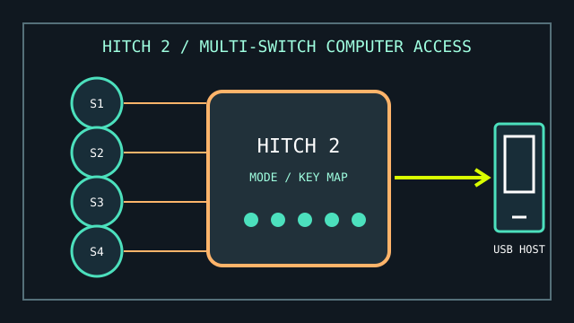

[ COMPUTER ACCESS // USB SWITCH INTERFACE ]
AbleNet Hitch 2
A USB computer-access interface that maps connected external switches to selectable computer commands.

MODEL IDENTIFICATION: Hitch 2, product number 10000021. Keep the unit label and cable/port condition in the inventory record.
Model specifications
| Catalog leaf | Adaptive and switch-access controls |
|---|---|
| Exact model / identifier | AbleNet Hitch 2 (10000021), USB switch interface. |
| Mechanism and primary specifications | Integrated USB connection, five 3.5 mm switch inputs, selectable access modes, and a mode for mouse-cursor control; custom mode supports up to four programmed keystrokes per switch. |
| Host interface and compatibility | USB connection to compatible Windows, macOS, ChromeOS, or Android hosts; AbleNet specifies use with switch-accessible software. Switch inputs use standard 3.5 mm plugs. |
| Revision identification | Record Hitch 2 rather than the earlier Hitch version; record selected mode and the software/host used for functional testing. |
Compatibility, setup & limitations
- Hitch 2 is an interface, not a switch: compatible switches and an access method in the host software are needed for a complete setup.
- Available commands depend on the selected mode or programmed sequence and on whether the target software supports those keyboard or mouse actions.
- The manufacturer lists platform compatibility with a USB connection, but switch-access features and system settings differ between operating systems; test the exact host, software, and user workflow.
- The 9-pin input is for an optional accessory control, not an additional standard switch socket; identify connected accessories before interpreting a no-input report.
Preservation and service
Inspect all five switch jacks and the captive USB lead for looseness or strain damage. Label a known-good mode and switch in the service log before changing configuration.
Do not apply liquid cleaner to jacks or plug the interface into an unverified powered adapter.
Manufacturer sources
- AbleNet — Hitch 2 product pageProduct number, ports, modes, and supported host families.
- AbleNet SupportHub — Getting started with Hitch 2Connection, mode selection, and switch setup guidance.